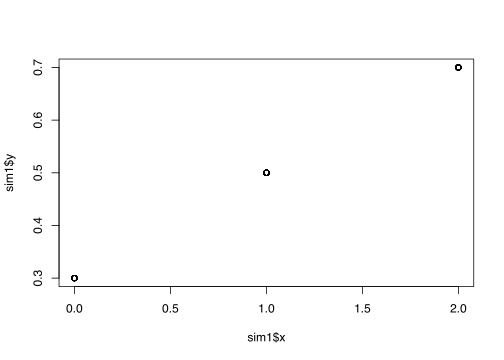
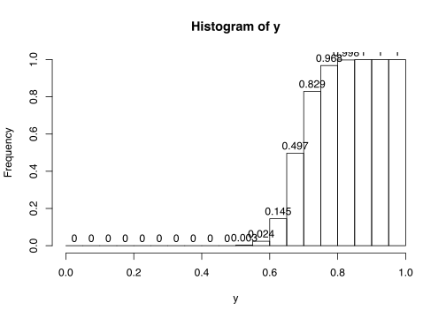

Lab: Basic Statistics | Models
RaukR 2019 • Advanced R for Bioinformatics
1 Tasks
1.1 Task | Simulation
Here, we will generate a synthetic data set by simulating data from a linear model.
\(Y = \beta_0 + \beta_1* X\) is a generating model – it describes how to generate \(Y\) from observed \(X\) and parameters \(\beta_0,\beta_1\).
1.1.1 Deterministic model
- Generate 100 samples of \(x,y\) by
- generate genotypes \(x\) for each sample from a uniform distribution on integers \(0,1,2\) (tip: use
runif) - set \(\beta_0=0.3\) and \(\beta_1=0.2\)
- generate a phenotype \(y\) for each sample of using the model \(y = \beta_0 + \beta_1* x\)
- plot \(y\) against \(x\).
- generate genotypes \(x\) for each sample from a uniform distribution on integers \(0,1,2\) (tip: use
1.1.1.1 Think about
- Does the plotted results look biologically reasonable?
- if not: what could be the reason?
#parameters
b0 = 0.3
b1 = 0.2
N=100
sim1 = data.frame(x=round(runif(N,min=0,max=2)))
sim1$y = b0 + b1 * sim1$x
plot(x=sim1$x, y=sim1$y) Some possible answers
Does the plot look biologically reasonable?
- If you followed the formula \(y = \beta_0 + \beta_1* x\) in the instructions literally, you end up with something like this

- This means that you have effectively demonstrated what a deterministic model is and that is a good thing pedagoically :D
- Notice that there are no variation in \(y\) for each genotyp \(X\), this is not what we see in biological data.
1.1.2 Statistical model
Deterministic vs statistical models
- \(Y = \beta_0 + \beta_1* X\) is a deterministic model
- does not model any variation
- Common, e.g., in classical physics (velocity \(v = \frac{\Delta x}{\Delta t}\))
- \(Y = \beta_0 + \beta_1* X +\epsilon,\) where \(\epsilon~\sim N(mean =0,sd=\sigma)\) is a statistical (equiv. stochastic, random) linear model (\(\sim\) means ‘is drawn from’)
- attempts to model variation around a population mean (the residuals) determined by the model
- the residual of sample \(i\) is \(y_i-(\beta_0 + \beta_1* X)\).
- used in statistic analysis
- \(Y\) is then called a stochastic or random variable
- attempts to model variation around a population mean (the residuals) determined by the model
Henceforth, we will only consider statistical models.
Task
- Generate data from \(Y = \beta_0+ \beta_1* X +\epsilon,\) where \(\epsilon ~\sim N(mean=0,sd = 0.05)\) (tip: use
rnorm).
#parameters
b0 = 0.3
b1 = 0.2
N=100
sim1 = data.frame(x=round(runif(N,min=0,max=2)))
sim1$y = b0 + b1 * sim1$x + rnorm(N, mean=0, sd=0.05)
plot(x=sim1$x, y=sim1$y)1.1.2.1 Think about
- Does the result look more biologically plausible?
- When can simulated data be useful?
Some possible answers
Biologically plausible
- Now we have some variation around the mean \(Y\) for each genotype \(X\).
- However,
- we still cannot be sure that the arbitrarily chosen \(\beta_0\) and \(\beta_1\) are correct and
- maybe there are more variables (or covariates), affecting \(y\), that are not in the model.
- Always think about what the assumptions of the model is and if they are reasonable!
Uses for simulated data
- Oracle knowledge when evaluating performance of methods, e.g., Type I and II errors
- Estimating probabilities and probability distributions of, e.g., data and summary statistics of data (next task)
1.2 Task | Probability of observed data
A (statistical) linear model, \(Y=\beta_0+\beta_1 X,\) generates \(Y\) given, or conditioned on, specified value of \(X\). Since we have variation in the model, we can’t say exactly what value \(Y\) will be. Instead, we can compute or estimate the probability that \(Y\) takes a specific value, say \(Y=y\), if we know that \(X\) has a specific value, say \(X=x\) (we say that the probaility is conditioned this value of \(X\)). This will be a conditional probability \(Pr[Y=y|X=x]\), where the bar (‘\(|\)’) means that the probability is conditioned on \(X=x\). In fact, if \(X\neq x\) then this probability tells us nothing about \(Y\).
Our task here is to, for the linear model \[Y=\beta_0+\beta_1 X\] with parameters \((\beta_0=0.3, \beta_1=0.2, \sigma=0.05\)), estimate the conditional probability \[Pr[Y <=0.65|X=2].\]
1.2.1 Simulation solution
- simulate 1000 \(y\) using the model above with \(x=2\) and store in a vector \(Y\).
- Make a histogram of \(Y\) and estimate the probability that \(Y<=0.65\) (tip: make sure that \(0.65\) is among to a histogram breakpoints)
Think About
- What shape does the plotted histogram have?
- Where approximately is the mean?
- Does this make sense in light of the generative model we used?
- Can we plot \(Pr[Y<=y|X,\theta]\) more directly? (tip: google, e.g., ‘probability distribution’)
#parameters
b0 = 0.3
b1 = 0.2
N = 1000
x = 2
y = b0 + b1 * x + rnorm(N, mean=0, sd=0.05)
h=hist(y, frequency=TRUE, right=FALSE, breaks=seq(0,1.0, 0.05), plot=FALSE)
h$counts = h$counts/N
plot(h, xlim=c(0,1.0), ylim =c(0,1), labels=TRUE)
# compute requested probability from hist
paste("Pr[Y<=0.65|X=2] = ", sum(h$counts[1:13])) Some possible answers
Shape
- The plot should be more or less bell-shaped (how well this show might depend on how many breaks you had for the histogram)
Mean
- The mean appers to be approx 0.7
Makes sense?
- A bell-shaped distribution is typical for the Normal distribution, which makes sense since the residuals are sampled from a normal distribution. However, in our simulation we used a
mean = 0, and not0.7– how does this work?- The reason is that (\(\Leftrightarrow\) means ‘is equivalent to’) \[N(mean = \mu, sd =\sigma) \Leftrightarrow N(mean = 0, sd = \sigma) + \mu,\] meaning that adding \(\mu\) moves the whole distribution to a new mean \(=\mu\).
- this means that our model can equivalently be written \(Y = N(\beta_0+\beta_1*X, \sigma)\)
- The reason is that (\(\Leftrightarrow\) means ‘is equivalent to’) \[N(mean = \mu, sd =\sigma) \Leftrightarrow N(mean = 0, sd = \sigma) + \mu,\] meaning that adding \(\mu\) moves the whole distribution to a new mean \(=\mu\).
What have we plotted; can we plot \(Pr[Y<=y|X,\theta]\) more directly?
- We have plotted the distribution of interval probabilities of \(N(\beta_0+\beta_1*X, \sigma)\).
- An important distribution in statistics is the distribution of the cumulative distribution function (CDF), which is exactly the probability we estimated above, namely \(Pr[Y <= y| \mu, \sigma]\) for a normal distribution \(N(mean = \mu, sd=\sigma)\). The code below plots the estimated CDF from our simulation; notice the typical sigmoid shape.
- From this distribution, we can directly read \(Pr[Y<=0.65|X,\theta]\) from the ppropriate bar.
#parameters
b0 = 0.3
b1 = 0.2
N = 1000
x = 2
y = b0 + b1 * x + rnorm(N, mean=0, sd=0.05)
h=hist(y, frequency=TRUE, right=FALSE, breaks=seq(0,1.0, 0.05), plot=FALSE)
h$counts = h$counts/N
# replace the histogram counts with the cumulative counts
h$counts = cumsum(h$counts)
#plot the CDF
plot(h, labels=TRUE)
# compute requested probability from hist
paste("Pr[Y<=0.65|X=2] = ", sum(h$counts[13]))## [1] "Pr[Y<=0.65|X=2] = 0.145"
Extra reading The General Normal distribution
- Additionally, multiplying a normal distribution with \(\sigma\) changes the ‘width’ of the distribution to have the satndard deviation \(\sigma\), meaning that we have \[N(mean = \mu, sd =\sigma) \Leftrightarrow N(mean = 0, sd = 1)* \sigma + \mu, \] something that is very much used in statistics
- The distribution \(N(mean=0, sd=\sigma)\) is called the general normal distribution
- Any variable \(Y\sim N(mean= \mu, sd=\sigma)\) can therefore be transformed into a Z-value, \(Z=\frac{Y-\mu}{\sigma},\) which has a general normal distribution, i.e., \(Z \sim N(mean=0, sd=1)\)
1.2.2 Analytical solution
- Conveniently, R has both the PDF and CDF implemented, making a
- Calculate \(Pr[Y<=0.65|X=2]\) using R’s cumulative distribution function (CDF) for the Normal distribution (tip: look up help for
Normal)- The CDF of the value \(y\) is the probability that the stochastic variable \(Y<=y\).
- Challenge: try both approaches with other values of \(y\) or try to compute \(Pr[Y>y|X=2]\).
Think about
- Do the result fit that from the Simulation?
- If not, can make the fit better?
- What can this result be used for?
- Challenge: Why do we look at intervals of \(Y\) rather than specific values?
b0 = 0.3
b1 = 0.2
x = 2
y = 0.65
mu = b0 + b1 * x
paste("Pr[Y<=.6|X=2] = ",pnorm(y, mean = mu, sd=0.05)) Some possible answers
- The result should fit quite well with that from the Simulation approach, given that precision obtained from the histogram
- The precision can be improved with a higher sample size for the simulation
- The CDF, i.e., \(Pr[Y<=y|X=2]\), is actually the basis for p-values. A p-value for an observation \(y\) under a model is defined as the probability of generating \(y\) or more extreme values from the model.
- p-values can refer to different meanings of extreme. Using our model as an example NULL model:
- For a left-tailed p-value, \(p(y) = Pr[Y<=y|X=x]\), i.e., the \(CDF(y, \mu, \sigma)\)
- For a right-tailed p-value, \(p(y) = Pr[Y>=y|X=x]\), i.e., \(1-CDF(y, \mu, \sigma)\)
- For a double-tailed p-value, \(p(y) = 2 \min\{Pr[Y<=y|X=x],Pr[Y>=y|X=x]\}\)
- If the p-value is significant, i.e., below some threshold \(\alpha\) (typically \(\alpha = 0.05\)) we can reject the NULL hypothesis that the data is generated from our model.
- What was the left-tailed p-value for \(y=0.65\) under our model and was that significant? What can we say about our model as a NULL model.
- p-values can refer to different meanings of extreme. Using our model as an example NULL model:
Extra Reading Why probability of interval
This is a bit tricky to explain.
- For discrete variable \(Y\), say heads or tails, we can compute an exact probability for, e.g. heads.
- However, for continuous \(Y\), it is not possible compute the probability of an exact value of \(Y\), since exact must be defined using an inifite number of decimals. Thus, in effect makes \(Pr[Y] = 0\)!
- Hence, only intervals of continuous variables can be assigned proper probabilities.
- However, it is, in statistics, very convenient to be able to talk about and work with exact values \(Pr[Y=y]y\) also for continuous variables.
- If we reduce the interval centered around \(Y=y\) decrementally and each time compute the mean probability over the histogram interval of intererest, we can get a better and better approximation of \(Pr[Y=y]\), we will in the limit end up with the Probability density of \(Y=y\).
- The distribution of probability densities for \(Y\) is called the Probability density function (PDF) of \(Y\)
- Mathematically, the PDF can be viewed as the derivative of the CDF
- Notice that the density of \(Y\) is not a probability (e.g., it can be higher than 1.0). Sometimes this is marked by using a different notation for the density, e.g., \(f(Y)\); here however, we will use \(Pr[Y]\) also for the density.
1.3 Task | Statistical tests
We will now consider an extension of the previous task to several data points. As you can imagine, doing this with the above approach could be cumbersome. Instead specific tests have been developed. We will here use the t-test as a very simple example.
1.3.1 Student’s t-test
We will use a single sample t-test, which tests how probable it is that some sampled data is drawn from a given Normal distribution; this distribution is called the NULL model of the test. The t-test is not designed to handle different genotypes, so for simplicity, we will, again, limit ourselves to the case \(X=2\).
The t-test uses normalized residuals as a test statistics:
\[\begin{eqnarray*} t &= \sum_{i}\frac{y_i-\mu}{s/\sqrt{N}} &= \frac{\bar{y}-\mu}{s/\sqrt{N}} \end{eqnarray*}\] where \(s/\sqrt{N}\) is an estimate of the standard deviation, \(\sigma\), from the observed data. As you can see this boils down to comparing the (standardized) estimated mean from the data, \(\bar{y}\) and the model mean, \(\mu\).
- Challenge: show the equality above`
These normalized residuals are approximately distributed \(t~\sim N(0,1)\) (this is the General Normal distribution, see also ‘Possible answers/Extra Reading’ under 1.2.1)
Conveniently, The t-test is implemented in the R function t.test
- Simulate a new data set from a linear model \(Y' = \gamma_0 + \gamma_1 X'\), for \(X'=2\) for all samples.
- For simplicity, we will limit ourselves to the case \(X'=2\)
- Use our previous model \(Y=\beta_0+\beta_1 X\) as the NULL model.
- Perform a one sample t-test (with \(\mu\) from the NULL model) on new \(Y'\) data.
- Try some different values of \((\gamma_0, \gamma_1)\) closer or further away from \((\beta_0, \beta_1)\)
Think about
- Does the t-test reject the NULL model or not?
# compute the mean, mu, from our model
b0 = 0.3
b1 = 0.2
mu = b0 + b1 * x
# Let's simulate the data from another model
c0 = 0.4
c1 = 0.2
N=100
yp = c0 + c1 * rep(x,N) + rnorm(N, mean=0, sd=0.05)
# t-test
t.test(yp, mu=mu) Some possible answers
* The t-test appears quite sensitive, especially for changes of \(\gamma_1\) (c_1)
The t-test can also be applied to other questions
- Test if two samples are generated by the same (unknown) model using the standardized difference in means, typically, using the NULL hypothesis that this difference is 0. Example code below
# data 1
b0 = 0.3
b1 = 0.2
N=100
y = b0 + b1 * rep(x,N) + rnorm(N, mean=0, sd=0.05)
#data 2
c0 = 0.4
c1 = 0.2
N=100
yp = c0 + c1 * rep(x,N) + rnorm(N, mean=0, sd=0.05)
t.test(y,yp)- Test if estimated parameters in a linear model are significantly different from 0 (see code). Example code below
# reuse previously simulated data in sim1
b0 = 0.3
b1 = 0.2
N=100
sim1 = data.frame(x=round(runif(N,min=0,max=2)))
sim1$y = b0 + b1 * sim1$x
summary(lm(y~x, data=sim1))